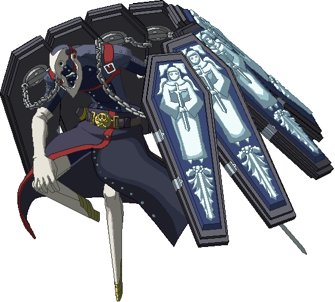

Thanatos
Arcano: La Muerte (Death) | Elemento: Maldición (Curse) / Todopoderoso (Almighty)

Origen y Mitología
En la mitología griega, Thanatos es la personificación de la muerte. Es hijo de Nyx (la Noche) y Erebos (la Oscuridad), y tiene un hermano gemelo llamado Hypnos (el Sueño). A diferencia de las creencias populares, Thanatos no es el "Diablo" ni un ser maligno; es un espíritu implacable pero justo, cuya labor es llevar las almas de los difuntos al Inframundo.
Se le representa como un hombre alado con una espada o una guadaña, y a menudo se decía que tenía un corazón de hierro y entrañas de bronce, siendo insensible a las súplicas de los mortales. En la saga Persona, Thanatos es un Persona de altísimo nivel, famoso por ser la forma ultimate del protagonista de Persona 3 y por su devastador ataque "Puerta de Hades".
"La muerte no es el final, sino el comienzo de un nuevo viaje. Yo soy el inevitable final."
Estadísticas de Combate
Thanatos es una entidad suprema. Sus estadísticas son abrumadoramente altas en todas las áreas, convirtiéndolo en una fuerza imparable:
| Atributo | Valor | Descripción |
|---|---|---|
| Nivel | 65 | Nivel inicial de invocación. |
| Fuerza | 45 | Ataque físico básico y cortes letales. |
| Magia | 48 | Poder de los hechizos de maldición y alma. |
| Resistencia | 42 | Defensa contra ataques físicos. |
| Agilidad | 40 | Velocidad y evasión. |
| Suerte | 38 | Probabilidad de golpes críticos. |
Habilidades y Afinidades
Su arsenal es tan destructivo que puede acabar con ejércitos enteros. Estas son sus habilidades más peligrosas:
- Door of Hades: Ataque de daño masivo de maldición a todos los enemigos.
- Maeigaon: Ataque pesado de maldición a todos los enemigos.
- Megidolaon: Ataque de daño todopoderoso (Almighty) a todos los enemigos.
- Brave Blade: Ataque físico pesado a un enemigo.
- Enduring Soul: Revive al usuario con toda la salud una vez por combate.
Debilidades y Resistencias
Como es la muerte misma, es casi imposible de detener, pero tiene un talón de Aquiles:
- Resistente a: Maldición (Curse).
- Débil contra: Bendición (Bless).
¿Quieres saber más?
Si te interesa la mitología griega, puedes aprender más sobre este fascinante dios en: La mitología de Tánatos en Wikipedia.